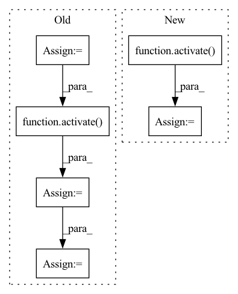

Pattern ID :15043

Before Change
return inp
inp = inp.reshape(ctx.dims.batch, -1, ctx.dims.spatial_mixing_kernel, ctx.dims.features)
inp = inp.transpose(0, 3, 1, 2)
shape = inp.shape
transposed_shape = list(shape)
transposed_shape[3], transposed_shape[2] = transposed_shape[2], transposed_shape[3]
inp = jnp.einsum("bfrs,sz,sz->bfrz", inp, weights[0], mask)
for wgt in weights[1:]:
inp = activate(ctx, inp)
inp = inp.reshape(*transposed_shape)
inp = jnp.einsum("bfsr,sz,sz->bfrz", inp, wgt, mask)
for _ in range(len(weights) - 1):
inp = inp.transpose(0, 1, 3, 2)
inp = inp.reshape(*shape)
return inp.transpose(0, 2, 3, 1).reshape(original_shape)
After Change
new_dims = original_dims[:i + 2] + "z" + original_dims[i + 3:]
reduced_dim = original_dims[i + 2]
if i > 0:
inp = activate(inp)
inp = jnp.einsum(f"{original_dims},{reduced_dim}z,{reduced_dim}z->{new_dims}", inp, wgt, mask)
return inp.reshape(original_shape)
In pattern: SUPERPATTERN
Frequency: 4
Non-data size: 6
Instances
Fragment ID: 50455041
Project Name: homebrewnlp/homebrewnlp-jax
Commit Name: e3894fce349563809e673ef1a497a476f9bd8d34
Time: 2022-09-01
Author: 39779310+ClashLuke@users.noreply.github.com
File Name: src/model/mixer.py
M Class Name: AnonimousClass
N Class Name: AnonimousClass
M Method Name: mix(2)
N Method Name: mix(2)
M Parent Class:
N Parent Class:
M File Name: src/model/mixer.py
N File Name: src/model/mixer.py
M Start Line: 12
M End Line: 34
N Start Line: 14
N End Line: 32
'>
Before Change
return inp
normed = instance_norm(ctx, inp)
mid = activate(ctx, lax.psum(matmul(normed, inp_weight, 2), ParallelAxes.model))
out = dot(mid, out_weight, -1, 1)
return out
After Change
normed = instance_norm(ctx, inp)
mid = dot(normed, inp_weight, -1, 1, -2, 0)
mid = lax.psum(mid, ParallelAxes.model)
mid = activate(ctx, mid)
out = dot(mid, out_weight, -1, 1, 0, 0)
out = transpose(out, tuple(range(1, inp.ndim - 1)) + (0, -1))
return out
'>
Fragment ID: 50455044
Project Name: homebrewnlp/olmax
Commit Name: 62328bde28eb42d5ab31fdce9e34c858d29a206b
Time: 2022-02-04
Author: 39779310+ClashLuke@users.noreply.github.com
File Name: src/model.py
M Class Name: AnonimousClass
N Class Name: AnonimousClass
M Method Name: feed_forward(2)
N Method Name: feed_forward(2)
M Parent Class:
N Parent Class:
M File Name: src/model.py
N File Name: src/model.py
M Start Line: 84
M End Line: 91
N Start Line: 84
N End Line: 95
'>
Before Change
new_dims = original_dims[:i + 2] + "z" + original_dims[i + 3:]
reduced_dim = original_dims[i + 2]
if i > 0:
inp = activate(inp)
inp = jnp.einsum(f"{original_dims},{reduced_dim}z,{reduced_dim}z->{new_dims}", inp, wgt, mask)
return inp.reshape(original_shape)
After Change
@with_context()
def mix(ctx: Context, inp: jnp.ndarray, depth: jnp.ndarray) -> jnp.ndarray:
weight_shape = [ctx.dims.spatial_mixing_kernel] * 2
wgt0 = get_param(ctx, f"mix_0", weight_shape)
wgt1 = get_param(ctx, f"mix_1", weight_shape)
if ctx.is_initializing:
return inp
original_shape = inp.shape
max_dims = math.floor(math.log(ctx.dims.sequence, ctx.dims.spatial_mixing_kernel))
batch = lax.max(ctx.dims.sequence // ctx.dims.spatial_mixing_kernel ** (depth % max_dims + 1), 1)
mask = jnp.logical_not(jnp.tri(ctx.dims.spatial_mixing_kernel, k=-1)) if ctx.model.autoregressive else 1
out = inp.reshape(ctx.dims.batch * batch, ctx.dims.spatial_mixing_kernel, -1, ctx.dims.features)
out = jnp.einsum("bkrf,kg,kg->bgrf", out, wgt0, mask)
out = activate(ctx, out)
out = jnp.einsum("bkrf,kg,kg->bgrf", out, wgt1, mask)
return out.reshape(original_shape)
'>
Fragment ID: 50455047
Project Name: homebrewnlp/homebrewnlp-jax
Commit Name: acfb8d5fbb1ba8f6b7830832f913663e426b9d09
Time: 2022-09-01
Author: 39779310+ClashLuke@users.noreply.github.com
File Name: src/model/mixer.py
M Class Name: AnonimousClass
N Class Name: AnonimousClass
M Method Name: mix(3)
N Method Name: mix(2)
M Parent Class:
N Parent Class:
M File Name: src/model/mixer.py
N File Name: src/model/mixer.py
M Start Line: 14
M End Line: 32
N Start Line: 13
N End Line: 29